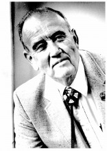

Please note: the AAS Obituaries are temporarily being hosted on this website while their full content is being ingested into the PubPub publishing platform newly adopted by the Bulletin of the American Astronomical Society. When the migration is complete, your existing links will take you to the final, migrated content. Contact peter.williams@aas.org with any questions.
Edward W. Burke Jr. (1924-2011)
Dr. Edward W. Burke Jr. passed away on June 15, 2011, after suffering a heart attack. Dr. Burke devoted his professional life to the research and teaching of physics and astronomy at King College in Bristol, Tennessee.
Edward W. Burke, Jr., was born in Macon, Georgia, on September 16, 1924. He was a Navy veteran, having been commissioned as an ensign in 1944. He served in the Pacific near the end of World War II. He proceeded to complete his undergraduate degree in mathematics from Presbyterian College in 1947 and pursued the M.S. and Ph.D. in physics (1949 and 1954, respectively) at the University of Wisconsin. Under the direction of Professor Julian Mack, his thesis was titled “Isotope Shift in the Spectra of Boron.” Although he did research in atomic spectra in the early part of his career, his interest in astronomy and variable stars in particular were his primary interests during his long academic career.
Dr. Burke began his illustrious career at King College in 1949. He initiated the astronomy program there in 1950, included constructing a 12.5 inch Newtonian telescope, homemade as was most everything in those days. Many of his students learned about photometry at the Burke Observatory on the college campus.
Burke was known for his trips to the Kitt Peak and Lowell observatories accompanied by undergraduate students on his trips, all of which were made by automobile which he preferred over flying. His initial interest in Ap stars later broadened into variable and especially eclipsing binary stars. His motivation was maintained by his desire to have his students experience basic research and to spark their interest in advanced degrees. Numerous students achieved advanced science and medical degrees because of Burke’s encouragement and mentoring.
In 1959, Dr. Burke was awarded a Fulbright professorship and traveled to Chile where he taught physics for a year in the Engineering School at the University of Chile in Santiago. He worked to establish a physics program there and upon a return visit in 2003 he found that the university physics program was thriving.
In the 52 years of his association with King College, Dr. Burke served in many capacities. Over the years he was the tennis coach, Vice President for Academic Affairs, and Chairman of the Division of Natural Sciences and Mathematics for 31 years until his retirement in 1991. He continued to be involved on campus as a Professor Emeritus until his death.
Throughout his career he engaged the public in the wonder of astronomy. He organized the Bristol Astronomy Club for the amateur astronomers in the region. In 1957 he spearheaded the King College Moonwatch program, an international man-made satellite observing program organized by the Smithsonian Astronomical Observatory. He initiated Science Open House at King College, a program which hosted hundreds of talented high school junior and senior students from the Appalachian region, to enjoy tours and demonstrations in the science departments. Throughout his career he opened the Burke Observatory for thousands of interested viewers.
Burke was a southern gentleman, true to his roots in Macon, Georgia. At the same time he was also a man who never took “no” for an answer. He always found a way to recommend a way to solve a problem, to get a grant to do research, or to plan another observing trip. He was an eternal optimist who seemed to envision the possibilities rather than the limitations.
In addition to his duties at King College, he was a long-time member of the Lions Club where he spent considerable time helping disadvantaged people obtain suitable eyeglasses. He also taught Sunday School at State Street United Methodist Church for many years. He was an avid birdwatcher with the Bristol Bird Club. In his later years he competed in badminton at the Senior Olympics and served as a line judge at the 1996 National Senior Olympics in Atlanta.
He was married to Julee Struby Burke for 64 years. Julee was a participant in several research trips out west and served as a constant source of encouragement throughout his long career. Dr. Burke is survived by his wife, Julee, a son, Edward W. Burke, III, a daughter, Julia Burke Torbert (Edgar) and one grandson, Samuel Burke Torbert.
An endowed chair has been established in his name at King College: The Edward W. Burke, Jr., Endowed Chair in Natural Science. His legacy to education in the natural sciences in the Appalachian region will continue to inspire future generations.
Obituary written by: Raymond H. Bloomer, Jr. (King College)
Additional links:
BAAS Citation: BAAS, 2011, 43, 033